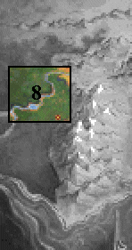
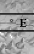
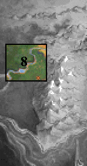
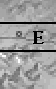

|  |  |
 |  |
||||
| |||||||
|  | |
 | |
||||
| |||||||
Pug concentrated on the storm.Whitecaps curled on the face of the Bitter Sea as furious jags of lightning slashed down from a darkening sky. Far off, the wobbling sails of ships leapt in the troughs of grey waves, struggling desperately against winds that threatened to shear them into ragged scraps. Fishermen and frenzied ship masters busied themselves along Krondor's docks as they raced to batten down flapping hatches and prevent unsecured goods from pitching into the churning seas. Everywhere there were planks and hammers and ropes, but among the workers not a soul dared utter a word.
Wrongness. Pug sensed it as clearly as he smelled the salt in the air, and felt the hardwood railing under his hand. What had begun three days ago as a seemingly weak summer squall was intensifying into a threshing eye of violence. Within hours it would make landfall, doubtless bruising the livelihoods of many coastal towns, Krondor among them.
Perhaps it can be tamed, Pug thought, his face twisting into a frown. More of a Lesser Path affair but it should be simple enough...
Even as he extended his hand the image of another storm formed in his mind unbidden, a terrifying storm that had raged over his head as he came into the greatness of his power in a far distant Empire called Tsuranuanni, a storm that had tested his right to be a member of the alien Assembly of Magicians, a storm that had rent open the heavens and forever set him apart from other mortal men.
Energy leapt from Pug's outstretched fingers into the heart of the storm, exploding within it a glorious rainbow pattern that illuminated the clouds in a throbbing elemental display. Greenish bands of color danced the sky as the wind began to abate, the torrential rains quickly softening to a mild patter as blue blasts of energy moved between sea and sky. Gently the ocean stilled of its own accord.
Satisfied the threat was reduced, Pug discontinued the spell with a slicing gesture and stepped back to watch the storm's progress. The sight eased his mind and allowed him time to mull over a series of issues, not the least of which was the ruined vacation that he, his wife Katala and daughter Gamina, had intended on making in Krondor, but like a lodestone to metal he found his thoughts returning again and again to recollections of the Empire...
PUG: Arrayed in flame the enemy comes, To shriek his cadence on skeleton drums...
MAKALA: For thunder's spite we'll raise our call, Though down shall crumble Empire all.
MAKALA: A Tsurani poet. I believe he was House Omechan...
PUG: House Minwanabi, reign of the fifty third Light of Heaven...
PUG: Is there something you need to see me about Makala? I am...busy.
MAKALA: Busy? You have been behaving like a needra bull with a burr in his bit! I came to ask what has Pug of Stardock so distracted that he cannot find time to meet with his associate magicians? Has his reputation so inflated that a member of the Tsurani Assembly is no longer worthy of his attention?
PUG: I am sorry. Perhaps you are right, I've just been very preoccupied.
PUG: I find myself obsessed with this storm. All week I've felt it building over the Bitter Sea and all the while I have suspected there is more to it than is immediately perceptible. It doesn't feel natural. Have you seen its like?
MAKALA: I have seen its match in destruction. As I recall, you created far more havoc in Tsuranuanni when you disrupted my Emperor's Imperial Games. Several city blocks destroyed, countless lives lost, the War lord cast down in dishonor...
PUG: I had a feeling you didn't summon a rift-door to chastise me about my lack of attention. What is this about, Makala?
MAKALA: Your loyalties, Pug. While you claim loyalty to the Empire, you live your life under the influence of a Midkemian King and took to wife a Thuril highlander. Your judgement is suspect!
PUG: From the day I left the Empire, my judgement and my loyalties ceased to be the concern of the Assembly of Magicians. I do what I see is best for all concerned.
MAKALA: I see. Then, is any act justifiable to that end?
PUG: If it serves the common good, yes.
MAKALA: Even if it violates an individual's rights?
PUG: What do you wish for me to say, Makala?! You lead me as if I were one of your needra cows but I am in no mood for games. State your business.
MAKALA: Very well. Your daughter Gamina has blossomed into a remarkable young woman. She is beautiful, gracious and an honor to your house. Unfortunately, she is also a girl with remarkable powers.
MAKALA: Your love for your daughter has led you into a grievous miscarriage of your duties! Why have you let her live?
PUG: My estimation of a person's magical talents is not determined by their sex, Makala, and I refuse to murder my child to appease a barbaric tenant of the Assembly! They have no authority in Midkemia!
MAKALA: In this instance, I believe they will choose to ignore the geography. At this juncture, the Assembly is troubled - surrounded by anti-traditionalists who embrace your Midkemian values, led in large part by Mara of the Acoma.
MAKALA: Open defiance by you as our most notable member could weaken our position within the Empire and that is something we cannot afford! We would be forced to make you publicly comply.
MAKALA: Although I am equally wary of female abomination, I have no desire to see your daughter dead. I have acted on your behalf and placed her in exile until such a time we can agree upon her ultimate fate...
PUG: Why didn’t you consult me? Where have you sent her?!
MAKALA: Seek her if you wish, but it will avail you little. Your further interference will likely ensure that the Assembly will carry out its order of death. They will be unable to kill her, however, if they cannot find her. It would be to your advantage to leave her be.
PUG: I will not content myself to sit here while the Assembly banters about the value of my daughter's life! I shall find her and then you tell your brethren to expect my visit!
MAKALA: You embark on a dangerous road but it is yours to take. Farewell then, Pug...
"THE BOOK OF MACROS"
TALKING TO KATALA
KATALA: ...the meditation tower being one of the first places I suspected of looking. I went there as soon as I discovered that neither he nor my daughter appeared for breakfast that morning. There I found the message that he had burnt into the wall.OWYN: The Book of Macros... What do you think the message means?
KATALA: I thought for a while that he intended for us to contact the magician named Macros, but it would be a feat impossible for even Pug to accomplish. Macros left Midkemia long ago and all he left behind were his writings...
OWYN: And presumably this Book of Macros would be among the books he left behind...
KATALA: Perhaps, but I cannot be certain. The library that Macros left on Sorcerer's Isle was vast and it took us the better part of a year to move the bulk of it to the Academy at Stardock. Since that time, some of the volumes have been lent out to various scribes so that they can be cataloged and transcribed.
OWYN: Then the book could be anywhere---a new approach. Before he disappeared, did you note anything unusual that he may have said or done?
KATALA: As I said earlier he had seemed agitated for some long time, but yes, there was something. About a month ago we were walking in the gardens outside of the palace, just the two of us enjoying the day when he suddenly halted us near a sewer grate. When I asked him what was wrong, he said, "Not all of the sheep are in our fold."
OWYN: Sheep? Forgive me, Lady, but your husband seems to have an infuriating penchant for the cryptic...
KATALA: Not ordinarily, no, only when things are on his mind. But come, I must head towards Stardock and look for evidence of this Book of Macros there. Where shall you two go?
GORATH: We go below into the sewers under Krondor, Owyn, good Lady. I believe we shepherds have an errant flock of sheep to find.
HEADING NORTH FROM THE TEMPLE OF LIMS-KRAGMA
Gorath stopped.
With a face bearing signs of frustration, he turned to Owyn.GORATH: Our path seems futile. We need to find the Book of Macros. Perhaps a scribe might be our best source of information. What do you know of scribes in southern Midkemia?
OWYN: The Vaults of Sarth are, of course, replete with scribes. Brother Marc could help us there. Also, I've heard Abbot Graves at Malac's Cross is well known for such knowledge.
HEADING NORTH FROM SLOOP
OWYN: Since we've come this far north, Gorath, I want to go on up to Cavall Keep.GORATH: Prince Arutha seemed to think that finding this Pug was of importance.
OWYN: It is important, but at the same time, we aren't far from there and I need to find out if Ugyne and my uncle are all right.
GORATH: Why would they not be?
OWYN: We were captured by moredhel who had penetrated into the Kingdom as far south as Cavall Keep. Since they took us, how can I be certain they didn't ride into Cavall Keep and burn it all to the ground? May be Navon du Sandau's Nighthawk friends didn't appreciate their little ring being broken up and decided to take it out on the local count. I've been thinking about it since we escaped from Sar-Sargoth and it's something I just need to know.
GORATH: I don't wish to sound indifferent to the fate of your kin, but I think there are rather more important issues to concentrate on. If the Kingdom falls to Delekhan and his supporters, I can guarantee your relatives will find their deaths early. I will go wherever you lead, Owyn, but I think you should think with your head rather than your heart.
ENTERING THE GREEN HEART
Gorath halted. Blinking slowly, he put a hand over his stomach, then looked towards his confused looking companion.GORATH: Hold for a moment, Owyn. I wish to speak to you.
OWYN: Why? What is it?
GORATH: I merely wished to prepare you for things that may transpire before we reach Elvandar. There are magics -- things ancient -- which have kept the moredhel from crossing into the forests of the eledhel, but I feel those things have been awakened. I may have some difficulty in completing our journey.
OWYN: Difficulty. What do you mean?
GORATH: It was not my intent to alarm you. Only to reassure you that no matter what may happen between here and Elvandar, I have come to consider you a friend.
ANCIENT VALHERU RUINS (if Abbot's Journal)
Thoughts filled his mind.Slowing in recollection, Gorath focused on his surroundings. The caverns themselves appeared unremarkable, yet this was a ruin of things ancient. What had been written in the Abbot's Journal? A chest... shell... Might it be?
THE CHAPTER ENDS
Entering Elvandar
Gorath faltered.A hand clasped to his gullet, he grimaced as Owyn looked to him for reassurance, forcing as much of a smile as he could for the boy's benefit. Imitating a gesture of fondness he had often seen, he reached out and tossled the squire's golden hair.
"We have come to the moment," Gorath said. "Elvandar lies just ahead. Perhaps the Eledhel may put this matter of Macros to rest."
Owyn nodded, peering into the heights hoping to catch a glimpse of the fair folk on their elaborate balconies among the leaves. "I am almost afraid to go on," Owyn said. "What if what we are looking for isn't here? What if the elves think were invaders and try to kill us?"
"We will not be...harmed," Gorath said, gasping as the magic of the elven forest attempted to turn him aside. "If you think it is time to enter the city, then I follow. It is your decision, Owyn."
They emerged among trees.Seeing that the lights of the elven city were not far off, they cut through a field of long weeds, emerging at last at the base of a fantastically large tree.
Owyn gaped.Awash in light Elvandar glistened, its circuitous faerie walkways decked in glowing lanterns of brushed gold and crystal. Above, a canopy of silver white leaves arched over the whole of the tree-top city, masking from view whether sun or moon reigned in the skies beyond.
"Gorath, isn't this the most perfect place you've ever seen ?" Owyn exclaimed. "I've never dreamt of anything like this!"
"Squire, if you can hold your tongue for a moment," Gorath said, "it might behoove you to bow to their Queen."
Flushed with embarrassment Owyn turned heel, shriveling as he noticed the cloaked figures who waited patiently upon their thrones. Quickly he folded in obeisance, hoping sincerely that human manners would be appropriate in the elven court.
"We have come from Krondor with news about Pug of Stardock," Owyn said. "We were in hopes."
"Silence, child." Queen Aglaranna spoke gently, her pale blue eyes glowing in the shadows. "Though we would hear of our dear friend, Pug, we first must attend to the unraveling of eons." Inclining her head towards Gorath, her voice and composure took on a grave edge. "You have come before us as a moredhel, but never may you leave Elvandar as such. Are you willing to return to us, your ancient kin, cousin?"
Rage flashed in his eyes. Trembling with emotion Gorath advanced on the Queen, his hand darting to the hilt of his sword.
"No, Gorath!" Owyn gasped, knowing his voice was too small to stay his friend's wrath. "You can't!"
"I was Gorath of the Clan Ardanien," he spat, his voice thick with an ageless contempt. Color drained from his face as he gripped ever more tightly the sword at his side. "I am Gorath and I formally return to the Eledehel and swear fealty to Aglaranna, Queen of Elves and to Tomas, Prince Consort and Warleader." Falling to one knee, he knelt low before Aglaranna's feet. "I am yours to command, lady."
His heart hammering an unsteady tattoo in his chest, Owyn stared in frank appraisal of the elves before him. Except for a glazed expression lingering on Prince Consort Tomas' face, he saw no evidence that any of them had witnessed anything unusual.
"Rise. From this day forward, you are no longer moredhel, Gorath," Aglaranna said. "You are a member of the family of Elvandar and of the Eledhel. When your quest is done, you will return here to be one with us. That is our desire."
"What is this news of...Pug?" As if wakening from a dream, the elven Warleader spoke the magician's name with great concern, his dark eyebrows rising in interest as Owyn began to elaborate the details. At times he would request that certain details be repeated, but always his glassy eyes became sharply focused when Owyn spoke the names of Pug and members of Arutha's court.
"By the moons that means trouble," Tomas coughed as the boy finished his tale. "The Book of Macros is not a book but instead a gift that Pug gave to me long ago. I was to use it to come to him if ever he left that message for me. I must go."
"You cannot, love. Even now I can sense the effects of the painkilling herbs beginning to wear off," Aglaranna said, laying a pale hand on Tomas' shoulder. As if broaching a delicate subject, she continued quietly. "Three days ago the Warleader was struck with a poisoned blade. Only last evening did his fever abate but he demanded to be brought here when he heard that a moredhel was returning. He hasn't the strength for the trip. You must go in his stead."
"Don't try my patience, Aglaranna. Pug needs my help and I shall go!" Struggling to gain his feet, he blanched with the effort, standing straight only by groping the back of his throne.
"How many of our kin carried you here, my Warlord?" the Queen asked, her voice laced with concern. "Was it five or six? You are no longer possessed by the soul of Ashen-Shugar and you are not gifted with immortality! None doubt your strength or loyalty, Tomas, but you owe it to Pug to send able help."
"As always my love, you are wise," Tomas whispered, his strength beginning to fail him. Reaching beneath the seat of his throne, he brought forth a leather tome covered with dust.
GORATH: We may not be the strongest or the fastest, Tomas, but we are able and we are here. Send us to him.
TOMAS: I have little choice. You, Gorath, shall be my emissary in this. May the blessings of Elvandar go with you...and tell Pug I am sorry.
GORATH: We shall.